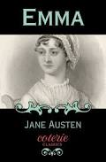

Some Austen Novels
| Book | Date | Synopsis |
|---|
 | 1813 | Pride and Prejudice by Jane Austen follows the independent and witty Elizabeth Bennet as she navigates societal pressures, class distinctions, and her own biases to find love with the proud and wealthy Mr. Darcy |
| 1817 | Anne Elliot, a woman who, at 19, was convinced to break off her engagement to the promising but poor naval officer, Captain Frederick Wentworth. Seven years later, Anne is reunited with Wentworth, who has now achieved success and fortune. |
| 1811 | Dashwood sisters, Elinor and Marianne, after their father's death leaves them in financial ruin, forcing them to find love and security by balancing Elinor's practical sense with Marianne's passionate sensibility. |
|  | 1815 | The privileged and self-confident Emma Woodhouse as she meddles in the romantic lives of her friends and neighbors in Highbury, England. |
 | 1817 | Catherine Morland, a naive young woman who is obsessed with gothic novels. While visiting Bath, she falls for the charming Henry Tilney and befriends Isabella Thorpe, but her overactive imagination leads her to suspect dark secrets at Northanger Abbey, the Tilney family estate. |